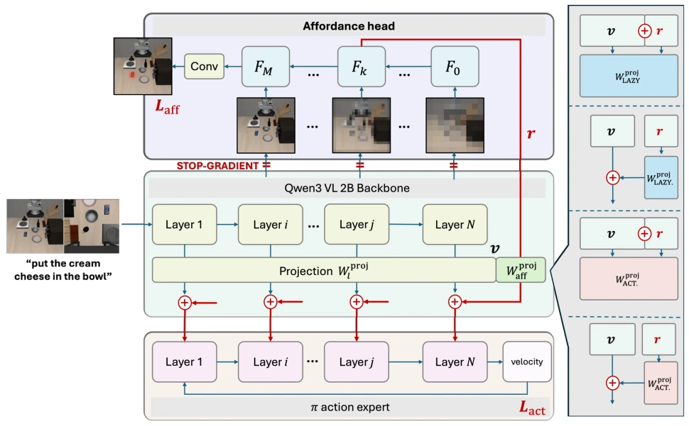
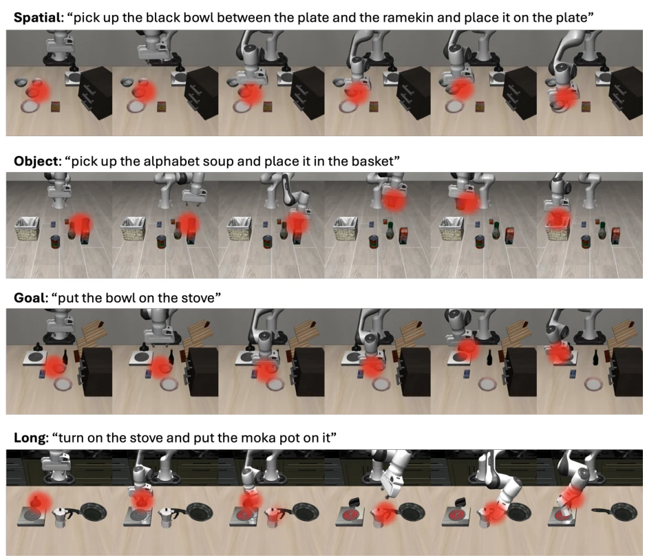
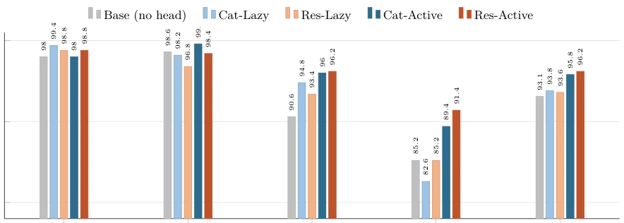
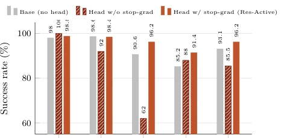

The title of this paper is aptly chosen; "wiring" is more important than "architecture". The authors did not pursue flashy Mixture of Experts, but instead doggedly focused on the integration method of an auxiliary head. The most biting finding is: zero initialization (Lazy), a seemingly safe LoRA tactic, is a pitfall here; random initialization (Active) instead forces the model to rely on auxiliary signals. Stop-gradient is even more of a life-or-death line; once gradients are let in, the main task collapses directly. Although only run on simulated LIBERO, this 3 percentage point improvement relies entirely on wiring tricks, making complex architectures like AffordanceVLA seem somewhat redundant. This reminds us that adding an auxiliary head in VLA is not simply "adding a Loss", but a systems engineering task, where wiring details are often more critical than the model itself.
VLA models always struggle with long-horizon and instruction disambiguation due to lack of explicit spatial interaction signals. Affordance can provide this dense supervision, but directly adding a head often backfires. Existing work like AffordanceVLA [16] relies on complex three-expert architectures and two-stage curricula, with high costs and unstable effects. More critically, many papers do not disclose how auxiliary heads are integrated, leading to irreproducible results. This paper aims to clarify the "wiring" details of auxiliary signal interaction with the backbone network through controlled experiments, solve gradient interference and feature injection efficiency issues, and prove that simple architectures can also reach SOTA without over-design.
The overall process is based on the QwenPI backbone, introducing an Affordance Head to predict contact heatmaps. The core innovation lies in the "wiring" design: First, when the Head reads Backbone intermediate features, Stop-gradient is enforced to prevent auxiliary gradients from polluting the backbone's language grounding capability. Second, the Head adopts a DPT-style pyramid structure to fuse multi-scale features. Most critically is the Bridge injection strategy: feature `r` is injected into the Action Expert's visual Tokens via linear projection `Waff`. The authors compared two topologies (Residual vs Concatenation) and two initializations (Active random vs Lazy zero). Residual preserves pre-trained features, Active forces the model to rely on the new path from the first step, avoiding the "inertial attractor" problem under Lazy initialization, ensuring auxiliary signals truly participate in reasoning.

Fig. 1. Left: our recipe (RES-ACTIVE). The backbone encodes the camera views and the instruction in a single forward pass; per-layer projections W proj l hand each layer’s visual tokens v to the corresponding layer of the flow-matching action expert. The affordance head reads uniformly spaced backbone layers through stop-gradient taps, reassembles earlier layers onto finer grids and later layers onto coarser ones, fuses them through a cascade of stages F0, . . . , FM, and decodes a per-view contact heatmap supervised by Laff. The feature r of an intermediate fusion stage Fk is carried by the bridge W proj aff (written Waff in the text) back into the visual tokens at every conditioning layer. The expert is trained with the action objective Lact in a single pass; at inference it integrates t
Tested on the LIBERO benchmark, 50 times/task. Baseline 93.1%, best RES-ACTIVE reaches 96.2%, matching AffordanceVLA [16] but with very few parameters. Ablation shows Stop-gradient is a prerequisite; without protection, success rate drops to 85.5%. Initialization is the dominant factor, Active is 2-3 points higher than Lazy. Topology impact is smaller, only under Active is Residual slightly better. Probe experiments found that directly inputting Ground-truth is actually harmful, indicating signals need internalized prediction. Zeroing features during inference can distinguish Lazy (regularization only) and Active (loaded path) modes. This proves wiring details are more critical than the model itself.

Fig. 2. RES-ACTIVE rollouts with the affordance head’s own predictions overlaid in red. One task per suite, six evenly spaced frames per episode; all four episodes succeed. The predicted contact region locks onto the instruction-designated object among distractors and switches discretely at stage boundaries, e.g. from the stove knob to the moka pot to the burner in the long-horizon task.

Fig. 3. Per-suite success rates of the headless base and the four bridge wirings (50 trials/task). Color encodes topology (blue: concatenation, orange: residual) and saturation encodes initialization (light: lazy, dark: active). The two active wirings dominate on Goal and Long, the suites that stress instruction disambiguation and long-horizon precision, while all five models are near saturation on Object and Spatial.

Fig. 4. The stop-gradient is necessary. The same head helps or hurts depending on this single bit: with the gradient blocked (RES-ACTIVE) the head lifts the average to 96.2, while letting the affordance gradient reach the backbone drops it to 85.5, a 10.7-point swing. The gradient-exposed variant even falls 7.6 points below the headless base, and the damage is selective: Goal, the suite that leans hardest on instruction grounding, collapses from the 90s to 62.0.